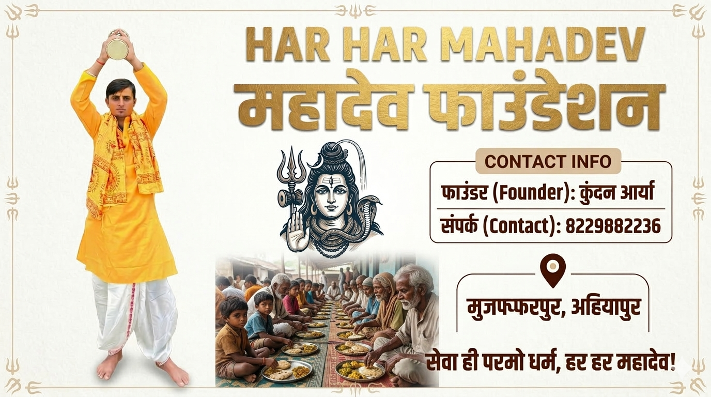
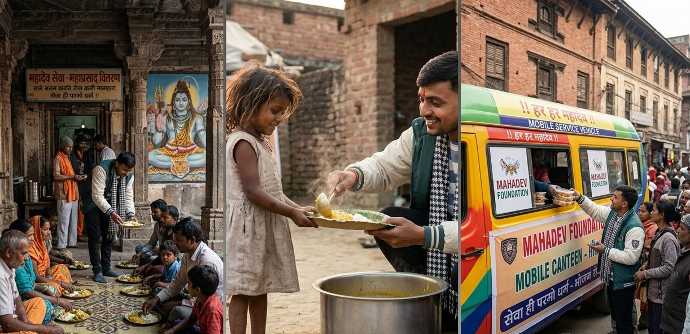

मुजफ्फरपुर के अियापुर से संचालित 'महादेव फाउंडेशन' समाज के वंचित वर्ग के उत्थान के लिए समर्पित है। हमारे संस्थापक कुंदन आर्या ने साइकिल से 7 ज्योतिर्लिंगों की पावन यात्रा कर जो ऊर्जा प्राप्त की, उसे आज लाखों लोगों के भोजन और सहायता में बदला जा रहा है। हमारा उद्देश्य महादेव के आशीर्वाद से हर जरूरतमंद तक पहुँचना है। हमसे जुड़ें और इस पुण्य कार्य का हिस्सा बनें।

🔱 Sewa Hi Parmo Dharma
🚴 Founder: Kundan Arya (7 Jyotirlinga Cyclist)
🍱 Serving Lakhs of Needy People
📍 Ahiyapur, Muzaffarpur, Bihar
📞 Help/Donate: +918229882236